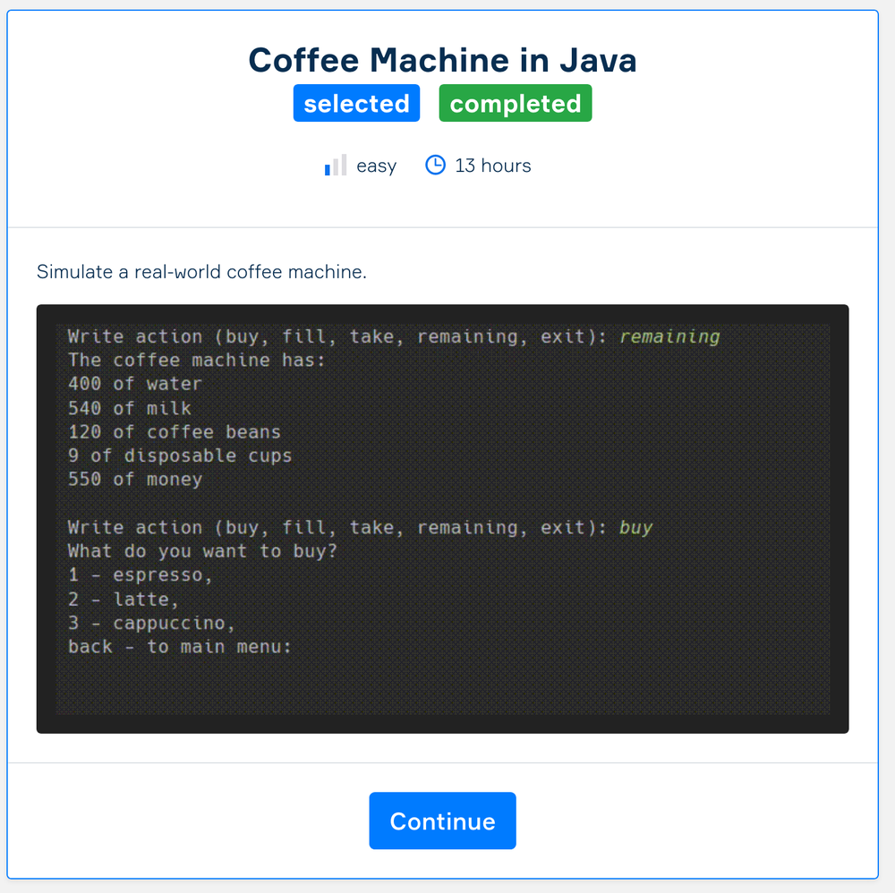
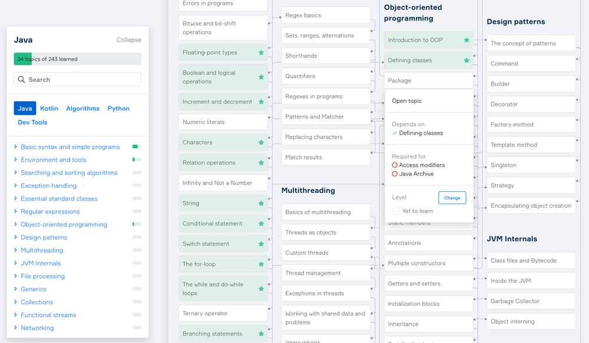

Hyperskill
I had a great chance to visit Hyperskill presentation last month, which is a new MOOC (?) provider for Java and Kotlin (at the moment of writing). Few days ago I also finished the first Java project there and want to quickly write my impression.
About
There are a lot of websites these days to learn coding. Hyperskill focus, as I understand it, is learning via projects. The platform has a number of them and supports Java and Kotlin. Your code is tested on the server and there is a great integration with Intellij IDEA through EDU plugin if you prefer to write code assignments locally.
Projects
At the moment of writing there are 32 projects for Java, which is a quite surprising amount taking into account Hyperskill young age and the project sizes.
Projects are vary in complexity and in topics from CLI for Coffee Machine, Tic-Tac-Toe AI and Calculator to Digit Image Recognition, Game of Life Simulation and Text Editor (!).
Apart from the project implementation steps there are some reading theory parts which cover various Java-related topics, quizzes and small coding assignments to check your understanding. I especially like the amount of extra exercises on each topic - you can skip most of it in case you got the first N right, but there are plenty additional tasks so you can learn the new material by heart.
{kind=link}
Map
Another unique feature I love is a Knowledge Map which is basically a net of topics with cross-references. It is very useful for tracking your progress in the theory, one can also fast-jump to specific subject. The map is interactive so feel free to play with it yourself.
{kind=link}
My Experience
{kind=link}
I finished the first project in Java path - building a Coffee Machine CLI. The project is split in 6 stages each one with more theory and more advanced implementation task. You can find my code (project and homework) on GitHub.
My final solution takes around 250 lines. Wonder how shorter is it going to be when rewritten in Kotlin = )
{kind=link}
Price
Pretty much everything is free. You can subscribe to a Pro account which allows one to send project step implementations on review. You can also contribute new problems to the platform in exchange for a Pro account.
Verdict
Highly recommended. The focus on projects is quite unique, or at least I never saw the same approach. Knowledge map allows you to track the path, everything runs smoothly and there are not many people at the moment ;)
Comments
Comments powered by Disqus